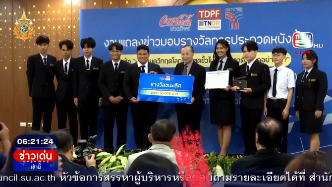
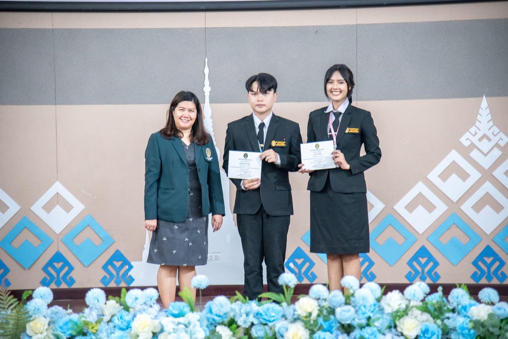
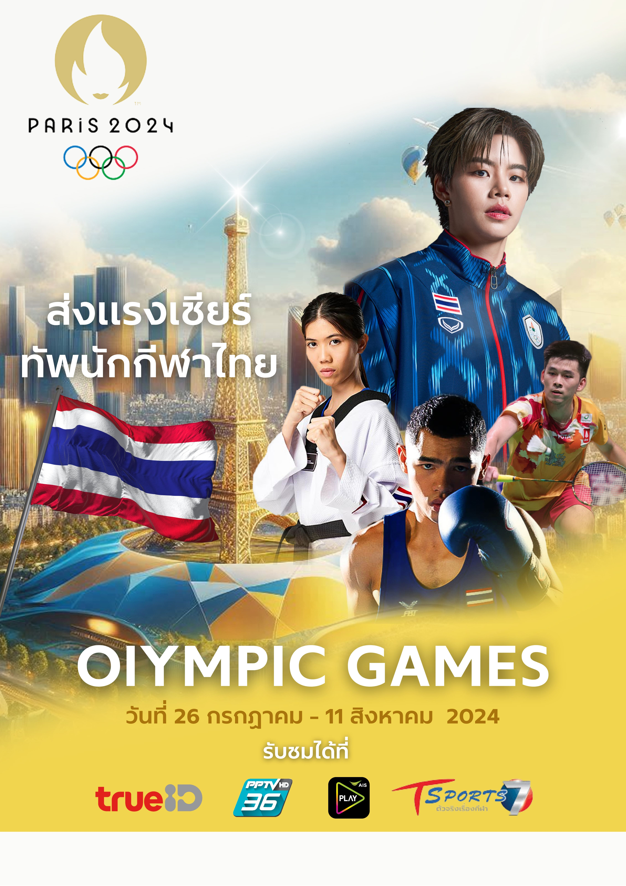

ผลงานไฮไลต์ (Selected Works) Highlighted Projects (Selected Works)
ตัวอย่างโปรเจกต์ที่ครอบคลุมทักษะด้านการศึกษา งานออกแบบมัลติมีเดีย และเทคโนโลยี Examples of projects covering educational skills, multimedia design, and technology.
 การศึกษา & กิจกรรมEducation & Activities
การศึกษา & กิจกรรมEducation & Activities
ประมวลภาพกิจกรรมActivity Gallery
รวบรวมภาพบรรยากาศการเป็นวิทยากร การสอนในสถานศึกษา และการร่วมจัดกิจกรรมต่างๆ ที่สะท้อนถึงทักษะความเป็นผู้นำและการทำงานเป็นทีมA collection of photos from my experiences as a speaker, teaching, and organizing activities reflecting leadership and teamwork.

รางวัลหนังสั้นระดับประเทศNational Short Film Award
ผลงานชื่อ “ฝันเล็กเปลี่ยนโลก” จากทีม “KADCHANAN Production” มหาวิทยาลัยราชภัฏอุบลราชธานี คว้ารางวัลชนะเลิศ ได้รับโล่ เกียรติบัตร พร้อมเงินรางวัล จำนวน 30,000 บาท1st Prize winner for the short film "Little Dreams Change the World" with "KADCHANAN Production" from Ubon Ratchathani Rajabhat University.

วิจัยและนวัตกรรมการเรียนรู้Learning Research & Innovation
การพัฒนาเครื่องมือวัดผลและสื่อนวัตกรรมการสอน และได้รับคัดเลือกเป็นตัวแทนนำเสนอผลงานระดับคณะและมหาวิทยาลัยDeveloping assessment tools and innovative teaching media. Selected as a university representative to present the research.

กราฟิกดีไซน์ & สื่อสิ่งพิมพ์Graphic Design & Print Media
แหล่งรวมผลงานออกแบบสื่อประชาสัมพันธ์ โปสเตอร์ โลโก้ และสื่อกราฟิก ที่นำเสนอความสร้างสรรค์ผ่านโปรแกรม Photoshop และ CanvaA collection of PR materials, posters, logos, and graphic designs showcasing creativity via Photoshop and Canva.
แฟ้มภาพถ่าย (Photography)Photography Portfolio
แฟ้มสะสมผลงานภาพถ่าย (Photobook) รายวิชาการถ่ายภาพดิจิทัล ที่บันทึกเรื่องราวและมุมมองผ่านเลนส์A photobook collecting stories and unique perspectives through the camera lens for a Digital Photography course.